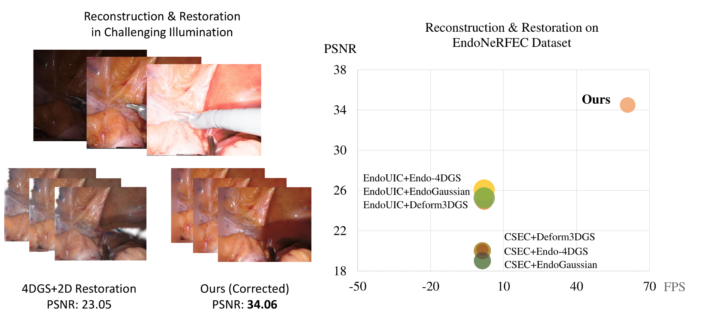
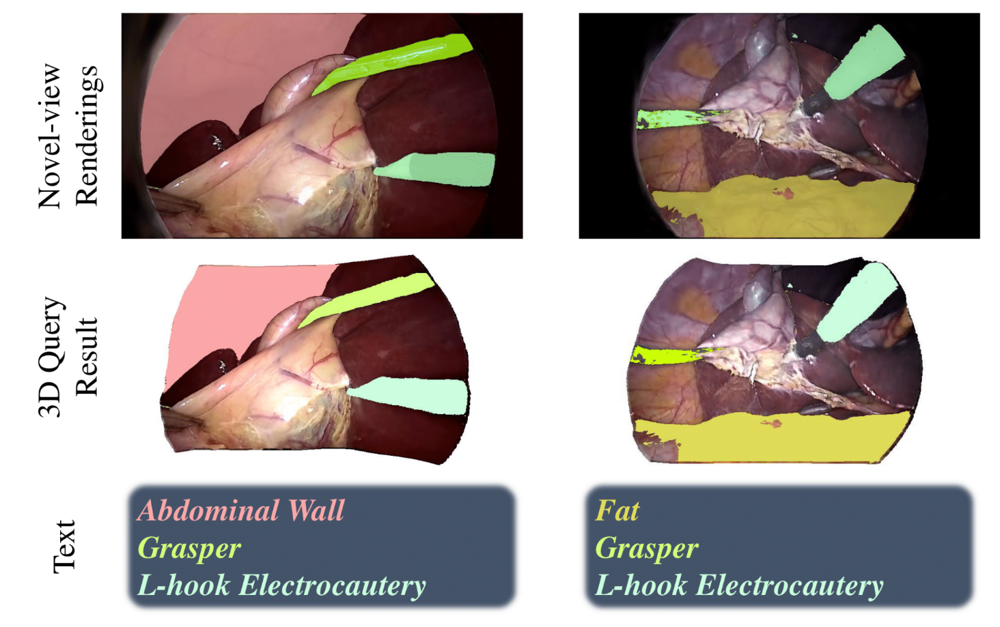
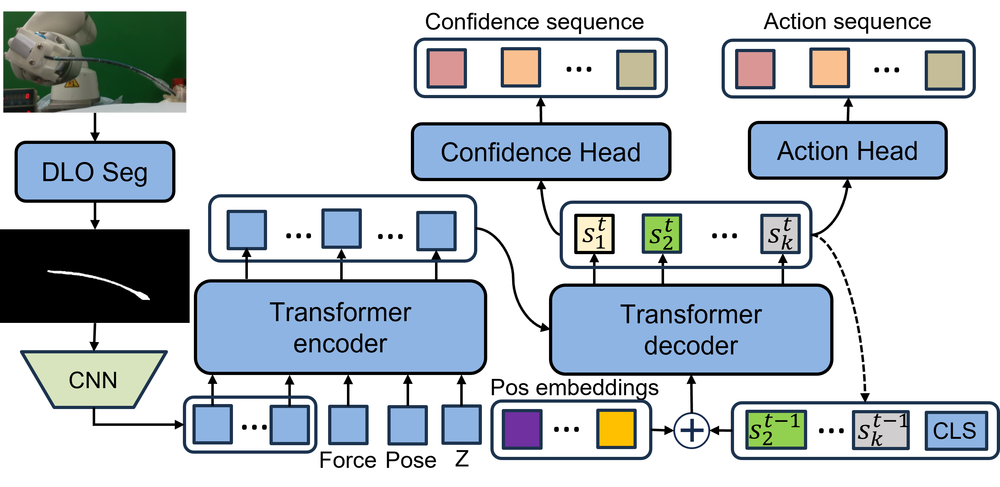
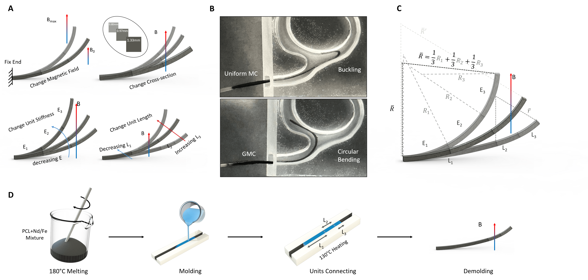
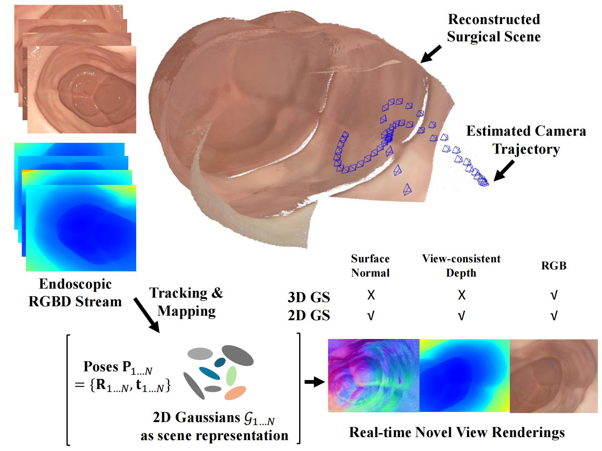
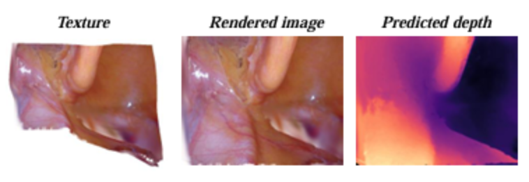
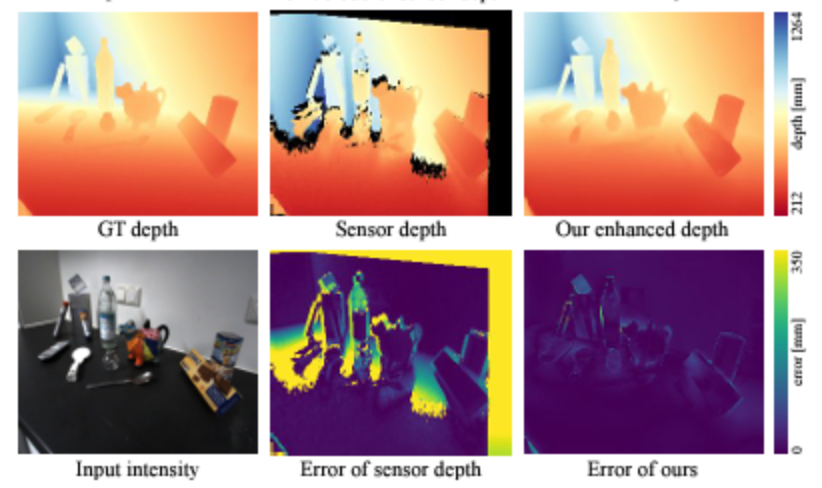
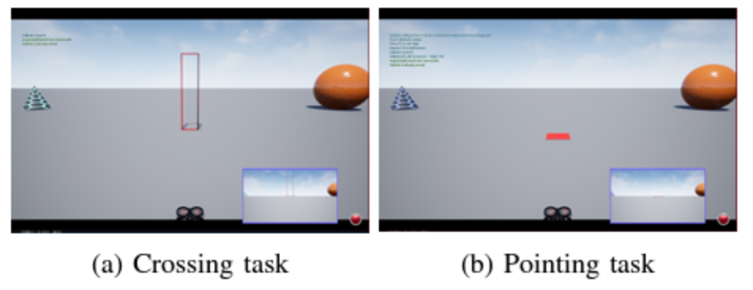

|
News:
2025-06: Three papers are accepted by MICCAI 2025.
2025-06: Two papers are accepted by IROS 2025.
2025-01: One paper is accepted by ICRA 2025.
2024-09: One paper is selected as Oral Presentation at ACM MM 2024 .
2024-09: One paper is accepted by ROBIO 2024.
2024-03: One paper is accepted by MICCAI 2024.
2024-02: One paper is accepted by CVPR 2024.
|
|
Selected Publications:
*Equal contribution †Corresponding Author
|
|

|
Endo-4DGX: Robust Endoscopic Scene Reconstruction and Illumination Correction with Gaussian Splatting
Yiming Huang,
Long Bai ,
Beilei Cui ,
Yanheng Li,
Tong Chen,
Jie Wang,
Zhen Lei,
Hongbin Liu ,
Hongliang Ren † ,
MICCAI, 2025
[arxiv]
[Project Page]
[Code]
|
|

|
SurgTPGS: Semantic 3D Surgical Scene Understanding with Text Promptable Gaussian Splatting.
Yiming Huang,
Long Bai ,
Beilei Cui ,
Kun Yuan,
Guankun Wang,
Mobarakol Islam,
Nicolas Padoy,
Nassir Navab,
Hongliang Ren † ,
MICCAI, 2025
[arxiv]
[Project Page]
[Code]
|
|

|
Learning to Perform Low-Contact Autonomous Nasotracheal Intubation by Recurrent Action-Confidence
Chunking with Transformer
Yu Tian,
Ruoyi Hao,
Yiming Huang,
Dinghong Xie,
Catherine Po Ling Chan,
Jason Ying Kuen Chan,
Hongliang Ren † ,
IROS, 2025
[arxiv]
|
|

|
Exploring Stiffness Gradient Effects in Magnetically Induced Metamorphic Materials via Continuum Simulation and Validation
Wentao Shi,
Yang Yang,
Yiming Huang,
Hongliang Ren † ,
IROS, 2025
[arxiv]
|
|

|
Advancing Dense Endoscopic Reconstruction with Gaussian Splatting-driven
Surface Normal-aware Tracking and Mapping
Yiming Huang*,
Beilei Cui* ,
Long Bai* ,
Zhen Chen ,
Jinlin Wu,
Zhen Li,
Hongbin Liu ,
Hongliang Ren †
ICRA, 2025
[arxiv]
[Code]
|
|

|
Endo-4DGS: Endoscopic Monocular Scene Reconstruction with 4D Gaussian Splatting
Yiming Huang*,
Beilei Cui* ,
Long Bai* ,
Ziqi Guo,
Mengya Xu ,
Hongliang Ren † ,
MICCAI, 2024
[arXiv]
[Code]
|
|

|
Robust Depth Enhancement via Polarization Prompt Fusion Tuning
Kei Ikemura* ,
Yiming Huang*,
Felix Heide ,
Zhaoxiang Zhang ,
Qifeng Chen ,
Chenyang Lei † ,
CVPR, 2024
[arXiv]
[Code]
[Project Page]
|
|

|
Towards Reproducible Evaluations for Flying Drone Controllers in Virtual Environments
Zheng Li,
Yiming Huang,
Yui-Pan Yau,
Pan Hui ,
Lik-Hang Lee † ,
IROS, 2022
[arXiv]
[Code]
|
|
Teaching:
ELEG 3701 2023 Fall
ELEG 4701 2023 Spring
ELEG 4701 2024 Fall
ELEG 5757 2024 Spring
|
|
Academic Services:
Review for TMI, MICCAI, IROS, ICRA, ROBIO.
|
|
Intern and Experience:
SenseTime, Computer Vision Engineer, 2022.1 - 2022.8
Enterprize (HKUST Robomaster), Infantry Robot PIC, RADAR Algorithm, 2020.9 - 2023.8
|
© Yiming HUANG
|